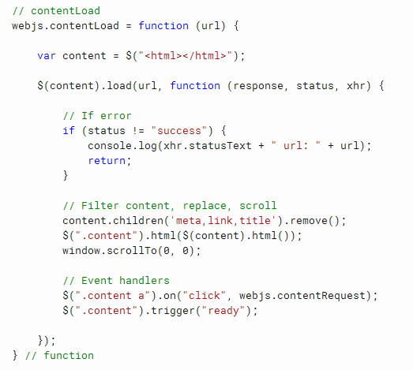

WebJS
WebJS is a free open source web framework for client side web development.

WebJS framework allows development of client side web applications with HTML, CSS, JScript.
Some advantages of this framework are simple fast and economical development,
small portable websites and applications, multi-language.
WebJS source code
https://github.com/ivoprogram/webjs
WebJS Folders Structure
WebJS folders structure organizes the folders and files of the framework.
The content folder contains website content in multi language subfolders.

index.html page
Index page contains the layout, navigation and content area,
other pages are loaded in the content area of the index page.
Index page also load styles scripts and webjs.js file.
webjs.js file
webjs.js file contains functions for content loading, intercept click events on links and load the html pages in the content area of the index page.
Content
The content of the website consists of html pages that are loaded within the index page.
Content pages are located in content folder and language subfolder, example content/en/
Languages
Multi language is implemented in multi-language subfolders under the content folder, and menu links in index page that point to different language subfolders.